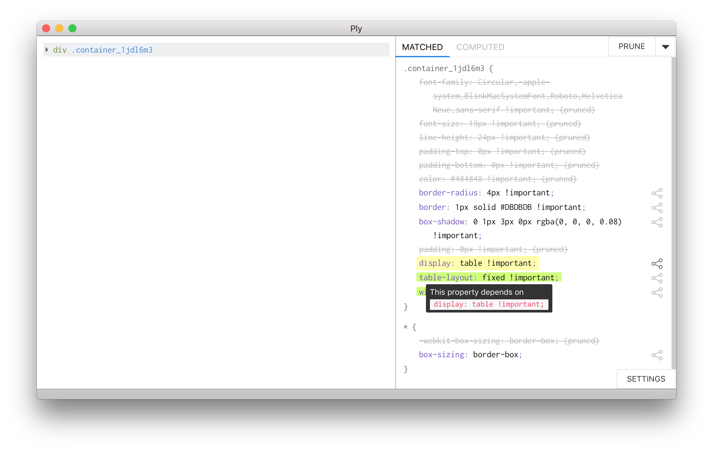

Ply
A Visual Web Inspector for Learning from Professional Webpages
UIST 2018, Berlin
Modern web design is complex and hard to learn

“How do I make a form like this?”

Tutorials may be hard to find

Tutorials aren’t quite right
vs.
Production webpages embed best practices
vs.

Any webpage can be inspected…

Effective properties

Ineffective properties

1. Pruning ineffective properties

1. Pruning ineffective properties
1. Pruning ineffective properties
2. Computing dependencies

2. Computing dependencies

Visual subtypes


Using annotations to surface design patterns (see paper)

width: 100%;
⟹ width: 100%; is effective
display: block;⟹ display: block; is ineffective
Learners were faster with Ply
- 50% faster overall (n.s., p = .06)
- 3.5 times faster to first milestone (p = .01)
- 2.5 vs. 8.9 minutes

Setup
- n = 5 inexperienced users
- Pre- and post-tests
- Implicit dependencies and visual subtypes (see paper)

Ply: Visual Web Inspection
